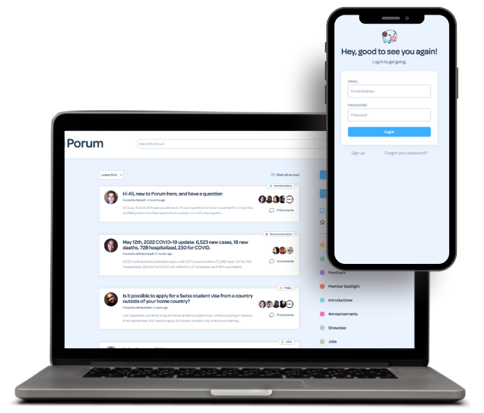

Dive into Anything.
Since we are social beings, the global pandemic has had a significant impact on
our social lives as it continues to limit our face-to-face interactions and isolate us from
the rest of the world.
As a result, many of us want to share our experiences with the internet, which
has served as the primary mode of communication during the pandemic. There are
many social media platforms that people can use as a result of this, but only a few
community-based platforms where people can post various information or contents.
Herewith, the proposed web application is an online forum similar to reddit and
stackoverflow, that will allow registered users to create posts from queries, news,
thoughts or to simply share something of their interest. With this, other users can
comment and react to these posts which will promote interaction and communication
between the users of the web application making it more user-friendly.
